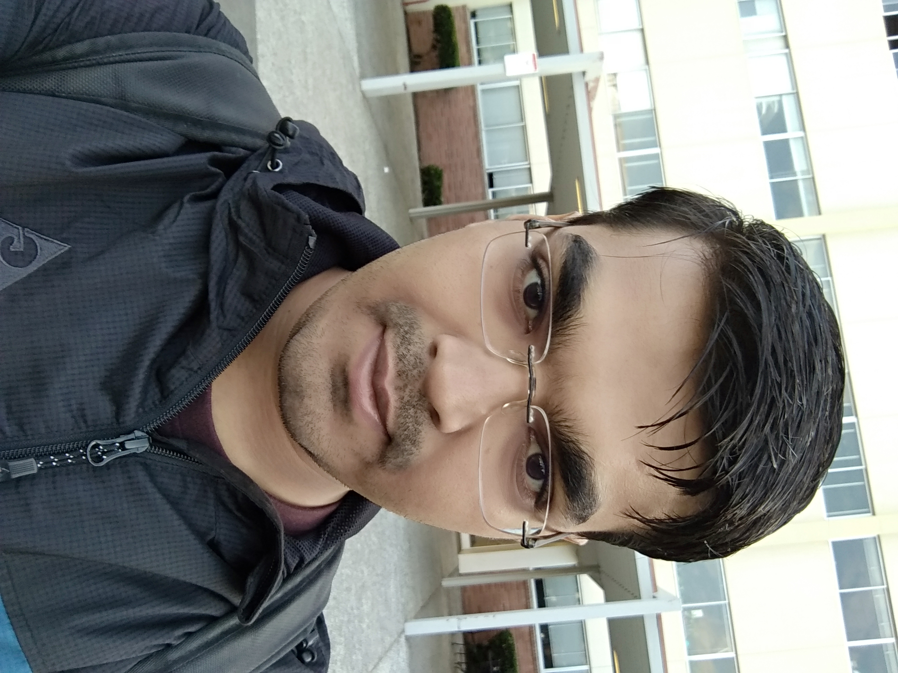

Savan A Patel

My name is Savan Patel, and I am currently pursuing a Masters in Computer Science at California State University East Bay.
I have over 2.5 years of experience as a software engineer and have worked at both small startups and medium organizations. While I'm a proficient full-stack software engineer, my expertise is in Cloud platforms (Azure, Aws, GCP), cloud provisioning tools such as Terraform, mobile technology, building scalable backend services (API services, desktop applications, video streaming using WebRTC, and async mechanisms), and frontend technologies (React, JavaScript, HTML, CSS, JSP).
I love building things. While hard engineering problems are often intrinsically fun to tackle, I'm most attracted to solving real-time problems with a business justification.
I'm looking for internship opportunities or a full-time position in 2021 where I can work with a collaborative team, and gain experience with engineering skills, architecture, and project management.